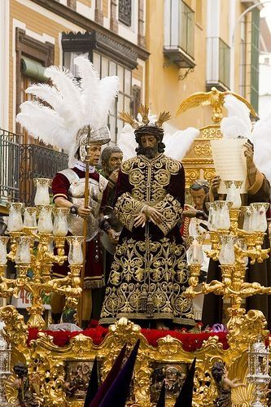

La Madrugá sevillana
Esta hermandad es una de las ioneras de la jornada ademas de una de las mas populares, procesiona con el Cristo de la Sentencia y la Virgen de la Esperanza Macarena, esta ultima cuenta con una gran devocion incluso fuera de Andalucia.
La hermandad tiene sus inicios en 1535 en el ya desaparecido Convento de San Basilio, y posteriormente en 1653 fue trasladada a la iglesia de San Gil desde donde procesionó hasta 1949, en este año la hermandad se traslada a su actual sede la basilica de la Macarena.Esta cofradia contaba con un tercer titular, el cual tambien procesionaba, se tiene constancia de que era un crucificado y desapareció debido a un incendio en la iglesia de San Gil.Antes de entrar en la nómina de la Madrugá la coorporacion procesionaba en la jornada del Viernes Santo.Uno de los años más señalados de la hermandad fue en 1995, cuando por motivos de la lluvia la hermandad se refugió en catedral y frente a la Virgen de la Esperanza Macarena se paró la Esperanza de Triana, otra gran devocion de la ciudad.
Esta hermandad es caracteristica por la banda que acompaña al Cristo, que es una centuria romana.El antiguo paso cristifero de la coorporacion era conocido como "la barberia" debido a la disposicion de las imagenes sobre el paso.
Sergio y Olivia-Robotica-3ESO-Ejercicio 2